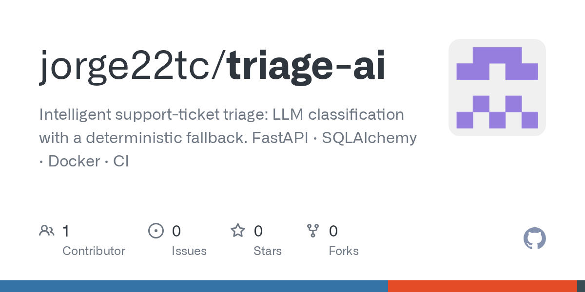
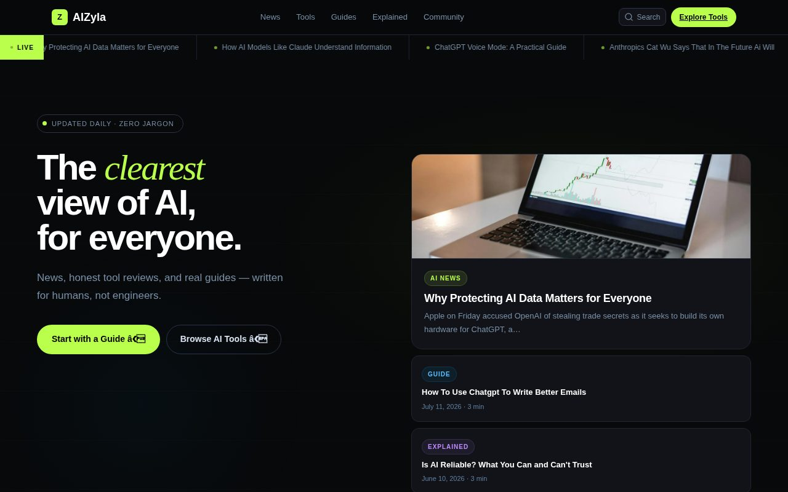
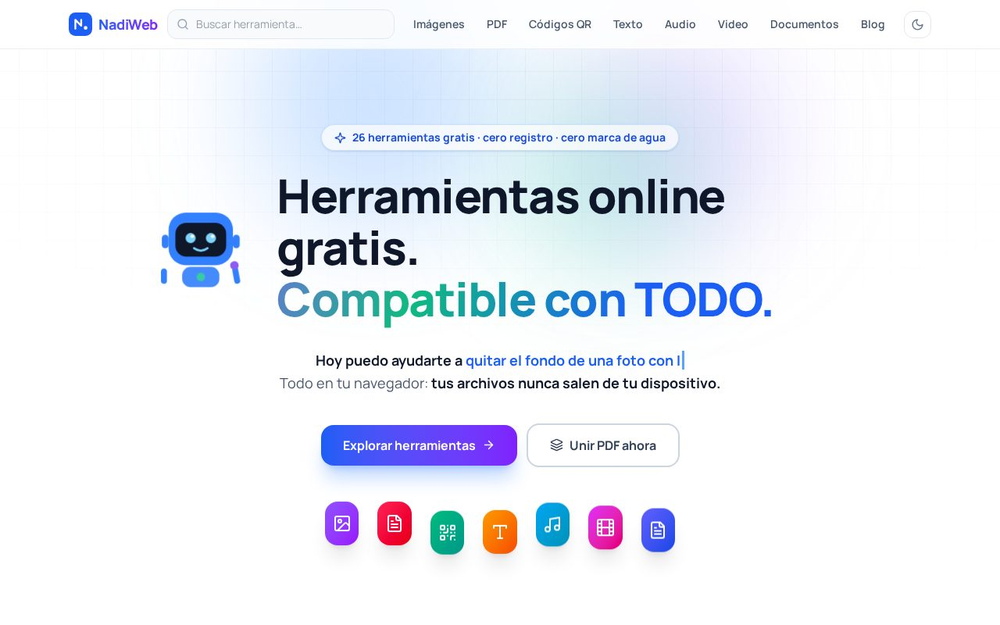
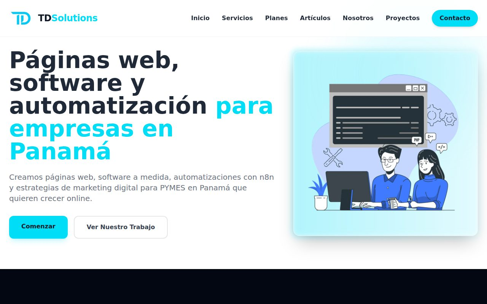
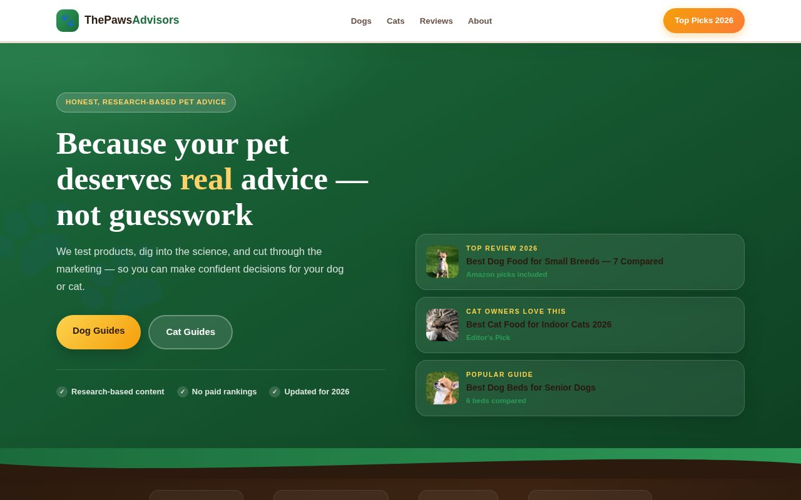

AI automation & LLM integrations
Automatización con IA e integración de LLMChat assistants, document and ticket classification, and LLM features with guardrails, connected to your existing systems.
AI, Automation & Cybersecurity Specialist · Panama City
Jorge Martes —
I help businesses in Panama and remote teams automate operations with AI: LLM integrations, n8n workflows, Python/FastAPI APIs and SQL & BI dashboards that run reliably in production. In my current role, an AI ticket classification system I led cut manual intervention by 60%+. Software engineering background (Ontario Tech University, Canada), now studying Cybersecurity Engineering.
01 · about
Most engineers ship a model. I ship the whole thing and keep it alive: the LLM feature, the data pipeline behind it, the evaluation and guardrails that stop it hallucinating, and the infra it runs on. My own VPS runs nginx multi-site, Docker (n8n + PostgreSQL), automated pipelines, hardened SSH and off-site backups — serving real users every day.
The chat button on this page? It's a grounded LLM assistant I built, running on that same infrastructure — ask it anything about my work. Bilingual English/Spanish, with software engineering studies at Ontario Tech University (Canada) and Cybersecurity Engineering in progress at Universidad del Istmo. I also completed Harvard's CS50 Introduction to Artificial Intelligence with Python (online course), building twelve AI projects.
connecting to production…
02 · services
Freelance and contract work for companies in Panama and remote teams. Clear scope, fixed quote, bilingual delivery. Servicios para empresas en Panamá, en español o inglés.
Chat assistants, document and ticket classification, and LLM features with guardrails, connected to your existing systems.
Self-hosted n8n workflows for invoicing, coupons, notifications, CRM and admin tasks, backed by PostgreSQL.
Python/FastAPI services, API migrations, database design and payment gateway integration (PagueloFácil).
Query optimization on Oracle and SQL Server, data pipelines and business intelligence dashboards.
Fast websites and web apps deployed on hardened Linux servers with nginx, Docker and automated backups.
Defensive review of APIs, backends and n8n automations under a written, authorized scope, with fixes included.
03 · why work with me
You get one engineer who owns the problem from the database to the deploy, and stays until it works in production.
From database and API to Docker, CI/CD and monitoring. One person accountable for the result, not a chain of hand-offs.
Tested, documented, backwards-compatible changes. The same standard I apply to telecom systems in production.
LLMs with validation, fallbacks and guardrails, applied where they save real hours, not where they look good in a demo.
Least privilege, secrets out of code, hardened servers and audited APIs, backed by cybersecurity engineering studies.
30 minutes to understand the process, the data and what success looks like. Free.
Clear deliverables, timeline and price before any work starts. No surprises.
You see working software every week, not a big reveal at the end.
Deployed, tested and documented, with support after go-live.
Tell me about it. I'll reply within 24 hours with how I'd automate it. También en español.
04 · meet nova
Nova is the assistant I built and run on my own servers. It knows my CV, projects and services, and answers in seconds, any time. It is also a live sample of the kind of AI I build for clients.
Real answer from Nova · try your own question
05 · experience
Liberty Networks · Panama City CURRENT
TD Tech Solutions · Panama
General Motors Canada · Ontario
06 · projects
Enterprise backend work (described without confidential details) and independent projects I build and operate on my own infrastructure. Screenshots are live captures.
Rebuilt seven production integration APIs (payments, settlement, catalog, provisioning) as async FastAPI services on an internal framework with auth, auditing, caching and standardized errors. A side-by-side comparator validated every response against the legacy ESB before cutover.
Read-only Flask applications that unify order monitoring, cross-system tracing, environment comparison and load testing, plus parameterized SQL tooling for billing validations. Data shaped with pandas/NumPy, shipped in Docker through GitLab CI.

FastAPI service classifying tickets with a two-tier engine: an LLM tier (LangChain/LangGraph, Anthropic/Gemini) with a deterministic fallback, plus structured-output validation so a hallucination can never poison the queue. 15 tests, CI, Docker.

News/tools site run by an automated pipeline: ingestion → CTR-scored selection → SEO/schema → verified deploys, with self-hosted models. Recovered a Google core penalty via a documented E-E-A-T redesign (+750% impressions).
My framework for operating multiple AI agents against one production environment: persistent shared context, per-project logs, live status tooling. Any agent resumes work with zero context loss. This site's chatbot runs on the same infra.

Online utilities platform with a Gemini-powered CV assistant. Astro static core with React islands, Web Audio API editing, client-side processing. (This portfolio's AI backend runs here too.)

Digital agency serving external clients: static frontend plus n8n workflow backend (Docker + PostgreSQL) powering coupons, invoicing and admin panels. PagueloFácil payment integration.

Content site with scheduled generation, honest-data guardrails (no invented ratings) and hub-based SEO architecture.
07 · skills
08 · education
Ontario Tech University · Canada
Universidad del Istmo · Panama · in progress
Ontario Tech University · Canada
Escuela Secundaria de Aserrío · Panama
Courses & certifications
Harvard University · CS50 · twelve projects
Verify credential →IMMUNE Technology Institute · Madrid
IMMUNE Technology Institute · Programa de iniciación en competencias digitales
Verify credential →09 · contact
Available for freelance projects and contract work: AI automation, n8n, APIs and dashboards. Remote (US hours) or on-site in Panama. I reply within 24 hours, in English or Spanish.